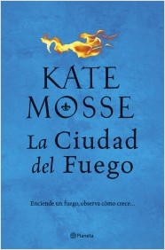

La ciudad del fuego
Editorial: Editorial Planeta Editorial: Editorial Planeta
Tematica: Novela historica | Aventuras
Novela historica | General novela historica
Novela contemporanea

Tematica: Novela historica | Aventuras Novela historica | General novela historica Novela contemporanea
Sinopsis de La ciudad del fuego: Carcasona, tierra de cataros, 1562. La joven catolica Minou Joubert recibe una carta anonima sellada con el emblema de una poderosa saga, solo cinco palabras:
ELLA SABE QUE ESTAS VIVA.
Antes de que Minou pueda descifrar el misterioso mensaje, el destino le pondra delante al joven converso Piet Reydon, que cambiara su destino para siempre. Piet tiene una peligrosa mision, y la necesita para salir vivo de La Cite.
Y mientras, la fractura entre religiones se hace cada dia mas profunda, las lineas de batalla se tiñen de sangre y las conspiraciones estan a la orden del dia. La misteriosa señora del Castillo de Puivert, espera el momento perfecto para atacar...
Los precios publicados en esta tienda están sujetos a cambios sin previo aviso y solo son aplicables para ventas en línea.
Algunos títulos están sujetos a disponibilidad.
Todos los Derechos Reservados